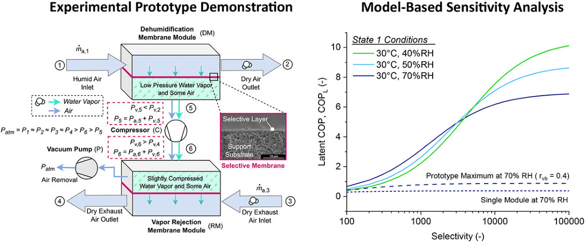
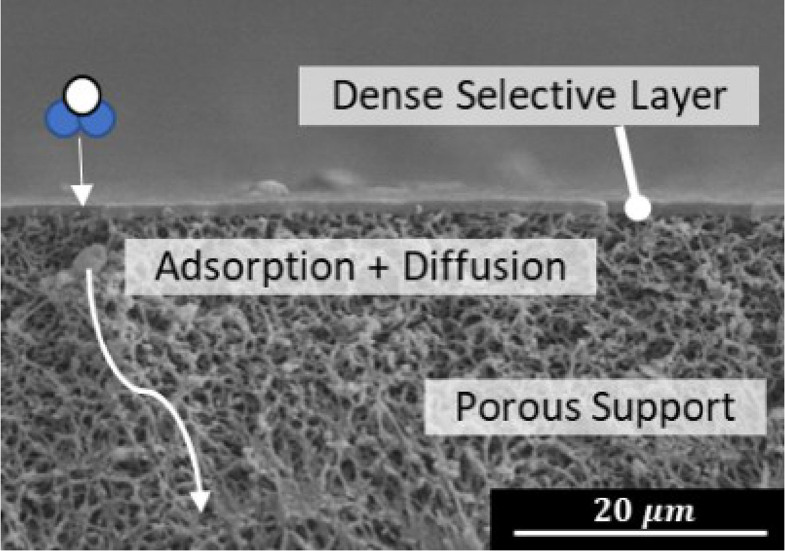
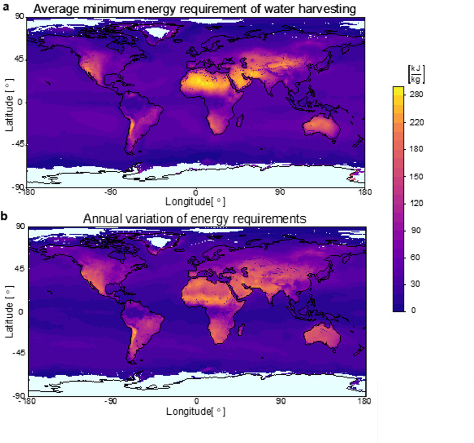
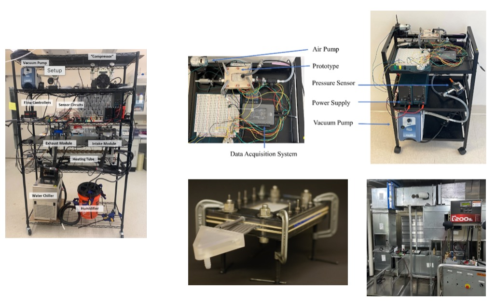

Research
Selective Membrane Dehumidification for Buildings HVAC
We develop thermodynamic models, as well as system-level prototypes, for systems which rely on vapor-selective membranes to separate water vapor out from air flows. These membrane-driven separations can provide substantial energy savings by (1) mitigating the need for over-cooling and reheating of air in buildings and (2) by largely avoiding, or at least minimizing, the energy penalty associated with condensation of water vapor. The technology also provides independent control of temperature and humidity in buildings which can provide even more energy savings over conventional refrigeration technologies. This class of technologies is still very young, and thus we are at the forefront of research and development for this technology.
Current Projects (as of 8/3/2026): Currently, we are developing thermodynamic models for closed-cycle membrane dehumidification systems as well as conducting a holistic analysis on water vapor compression technologies. At this point, the membranes are quite advanced, but designing effective water vapor compression technologies remains a significant challenge in this field that has limited commercial adoption.

Vapor Selective Membrane Fabrication and Characterization
In order to support our analysis of novel, membrane-based air conditioning systems, membranes must be made in lab, as they are not commercially available. Our efforts in this field have focused on the application of high-performance polymer coatings onto new support substrates. Furthermore, of notable interest was our analysis of the temperature dependence of many polymeric vapor separation membranes, adding to the benefits of non-isothermal vacuum membrane dehumidification.
Current Projects (updated 8/3/2026): We are extending our work on Pebax-based membranes and also working with scientists at Kraton in Houston, TX on new membrane materials. We are also collaborating with Prof. Manish Kumar on the development and implementation of carbon molecular sieve membranes for dehumidification applications as well as atmospheric water generation systems (funded by the UT Energy Institute). Lastly, we are evaluating the efficacy and accuracy of different water vapor permeance characterization procedures and developing guidance on best-practices for characterizing materials with exceptionally high water vapor permeance.

Atmospheric Water Harvesting (AWH)
As water scarcity grows, we will need to rely on a range of different technologies for producing drinking water. Atmospheric water harvesting has the advantage of providing a de-centralized source of clean water. Our research in this area focuses on the thermodynamic system design and modeling/simulation of various technologies including, water vapor selective membrane separations, metal organic framework (MOF) sorbent systems, and dew systems. Additionally, we have developed a theoretical “least work” framework to provide the first robust comparison method across different technology categories. We are employing supercomputing resources to calculate global spatial-temporal trends in AWH energy requirements.
Current Projects (updated 8/4/2026): We are collaborating with H2O Now on lab and field testing of DC-powered, refrigeration-based atmospheric water harvesting systems for agricultural applications. Additionally, we have a project funded through the Energy Institute at the University of Texas, in collaboration with Professor Manish Kumar, on developing carbon molecular sieve (CMS) membranes and systems for atmospheric water capture to reduce water stress in Texas. We are working on demonstrating small-scale emergency AWH prototype systems designed and developed in our lab. Lastly, we have students working on evaluating the potential for air conditioner condensate recovery as a means of AWH as by product of cooling our buildings.

Prototype Development
Across all of our research areas, we generally invent new systems and equipment. Thus, our experimental efforts are rarely limited to observation based research and the observational research we do conduct usually relies on custom in-house facilities. Generally, we aim to build working prototypes of the novel systems we invent or build custom test facilities to evaluate materials and components that cannot be easily evaluated in commercial test equipment. While this is not necessarily an “area” of our research, novel system prototype development is important aspect of most of our projects.
Current Projects (updated 8/4/2026): We are currently developing experimental test facilities to demonstrate the long-term degradation of selective membrane performance under realistic operating conditions. We are also renovating a walk-in environmental chamber to provide temperature and humidity control. Finally, we are building a prototype of a novel, small-scale emergency atmospheric water harvesting device.
